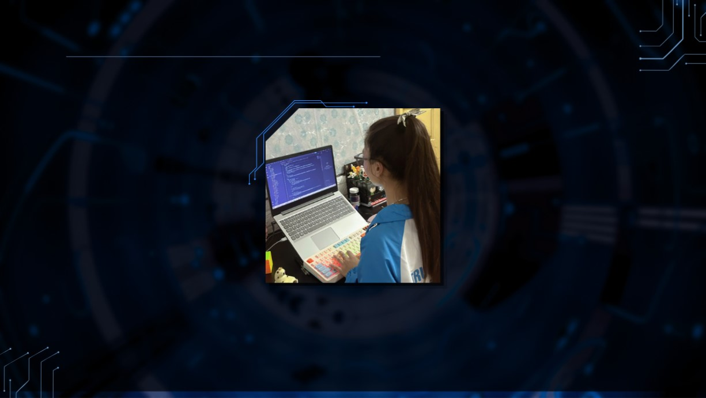

"Những kiến thức và sản phẩm hôm nay là kết tinh
của sự nỗ lực, đam mê học hỏi và tinh thần không ngừng đổi mới."

Name:Tô Phương Linh
Date:20/04/2007
Sex:Nữ
Academy:TUU-FTE-CN1A
ID:254D4800345
Hoobies:Tìm hiểu và khám phá các công nghệ mới
liên quan đến lập trình và phát triển Web.
Thích tự học thông qua việc xem tài liệu,
video hướng dẫn và thực hành xây dựng các giao diện
website đơn giản để nâng cao kỹ năng của bản thân.
Trong thời gian rảnh,thường dành thời gian
nghiên cứu thêm về lập trình Back-end vì đây là
lĩnh vực muốn theo đuổi và phát triển trong tương lai.
Là sinh viên năm nhất năng động với niềm đam mê lớn
dành cho lĩnh vực phát triển Web. Dù mới bắt đầu
theo học ngành Công nghệ Thông tin nhưng đã chủ động
tự học và nắm vững các kiến thức nền tảng như HTML, CSS
và JavaScript.Yêu thích việc tìm hiểu cách xây dựng
giao diện website hiện đại, tối ưu trải nghiệm người dùng
và luôn sẵn sàng khám phá thêm những công nghệ mới. Với tinh
thần ham học hỏi, sự kiên trì và thái độ cầu tiến, mong
muốn không ngừng hoàn thiện kỹ năng bản thân để phát triển hơn
trên con đường trở thành Web Developer chuyên nghiệp.”